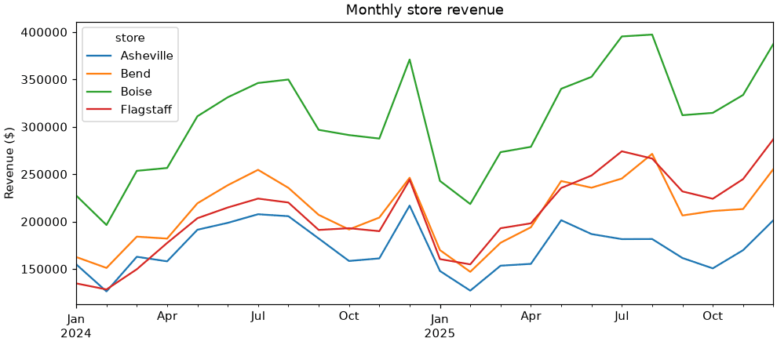
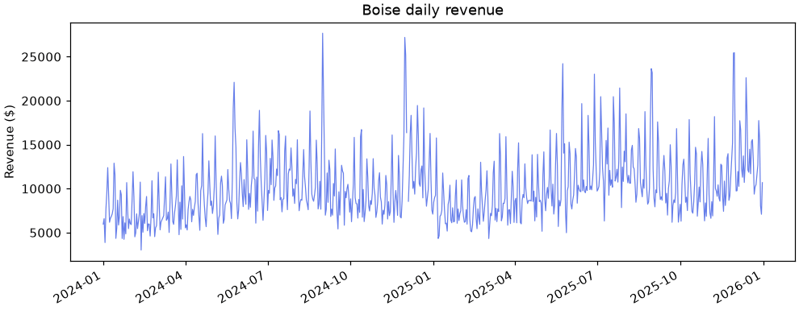
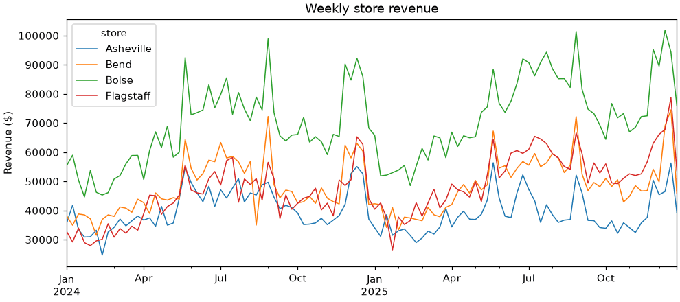

⏳ Lesson 2.7: Time Series
Make the calendar part of your data: select by date with a string, roll days up into weeks and months, measure change over time, and handle the days that are missing.
🎯 Learning Objectives
By the end of this lesson, you will be able to:
- Tell date text from real datetimes, convert between them, and pull out parts such as year, month and weekday
- Put dates in the index and select days, months and ranges with
.loc - Find missing dates with a complete calendar, and choose deliberately between leaving, zeroing and filling a gap
- Change frequency with
resample()and the current aliases, and check how many days are behind each total - Measure change with
shift(),diff()andpct_change(), including year over year
In This Lesson
📅 Dates Are Not Text
Is Asheville's revenue falling? Does Flagstaff grow every month or only in summer? What did the sale weekend add? Every one of those questions is about order in time, and pandas has a whole toolkit for them. The toolkit switches on the moment pandas knows that a column holds dates and not just characters that look like dates.
💡 Mental Model: A Ruler, Not a List of Labels
To a computer, the text "2024-03-01" is ten characters, no more related to "2024-02-29" than "cat" is to "dog". A datetime is a point on a ruler. Points on a ruler have distances between them, an order, and regular marks (days, weeks, months) that you can group by. Almost everything in this lesson is something you can do with a ruler and cannot do with labels.
Load the daily store sales with no special instructions and look at what the date column is.
import pandas as pd
pd.set_option("display.width", 150)
pd.set_option("display.max_columns", 20)
raw = pd.read_csv("data/daily_sales.csv")
print(raw["date"].dtype)
print(repr(raw["date"].iloc[0]))Output
str
'2024-01-01'Text. You met the fix in Lesson 2.2: tell read_csv which columns to parse.
daily = pd.read_csv("data/daily_sales.csv", parse_dates=["date"])
print(daily["date"].dtype)
first = daily["date"].iloc[0]
print(repr(first))
print(first.year, first.month, first.day, first.day_name())Output
datetime64[us]
Timestamp('2024-01-01 00:00:00')
2024 1 1 MondayThe column's dtype is now datetime64, and a single value from it is a Timestamp: a date and time that knows its own year, month and weekday. (When a column is already loaded as text, pd.to_datetime(raw["date"]) does the same conversion.)
Arithmetic on Dates
Subtract two timestamps and you get a Timedelta, a length of time. Add a Timedelta to a timestamp and you get another timestamp.
span = daily["date"].max() - daily["date"].min()
print(span)
print(span.days)
print(first + pd.Timedelta(days=90))
print(pd.Timestamp("2025-11-28") - pd.Timestamp("2025-01-01"))Output
730 days 00:00:00
730
2024-03-31 00:00:00
331 days 00:00:00The .dt Accessor
On a whole column, the same properties live behind .dt, just as text methods live behind .str.
parts = daily[["date", "store", "revenue"]].copy()
parts["year"] = parts["date"].dt.year
parts["month"] = parts["date"].dt.month
parts["weekday"] = parts["date"].dt.dayofweek # Monday is 0, Sunday is 6
parts["day_name"] = parts["date"].dt.day_name()
print(parts.iloc[[0, 20, 2902]])Output
date store revenue year month weekday day_name
0 2024-01-01 Asheville 5017.07 2024 1 0 Monday
20 2024-01-06 Asheville 6802.53 2024 1 5 Saturday
2902 2025-12-31 Flagstaff 7168.00 2025 12 2 WednesdayThose new columns are ordinary columns, so everything from Lessons 2.4 and 2.6 applies: group by weekday, pivot by month. That alone answers many time questions.
When the Text Is Ambiguous
The course files use YYYY-MM-DD, the international standard, which cannot be misread. Other sources are not so kind.
print(pd.to_datetime("03/04/2025")) # pandas assumes month first
print(pd.to_datetime("03/04/2025", dayfirst=True))
print(pd.to_datetime("03/04/2025", format="%d/%m/%Y")) # say exactly what you mean
messy = pd.Series(["2024-02-28", "2024-02-30", "not recorded"])
print(pd.to_datetime(messy, errors="coerce"))Output
2025-03-04 00:00:00
2025-04-03 00:00:00
2025-04-03 00:00:00
0 2024-02-28
1 NaT
2 NaT
dtype: datetime64[us]Is 03/04 March 4 or April 3? pandas guesses month first. If you know the layout, pass format= so nothing is guessed. And errors="coerce" turns anything unparseable, such as February 30, into NaT ("not a time"), the datetime version of NaN, so you can count the failures instead of crashing on the first one.
🗂️ Dates in the Index
The real power arrives when dates become the index, the row labels. The wide table you built in Lesson 2.6 does exactly that: one row per date, one column per store.
wide = daily.pivot(index="date", columns="store", values="revenue")
print(wide.head(3))
print(type(wide.index).__name__, len(wide))Output
store Asheville Bend Boise Flagstaff
date
2024-01-01 5017.07 4132.92 5962.00 3061.66
2024-01-02 3605.81 3675.57 6583.13 3575.24
2024-01-03 4265.55 6275.05 3866.59 3974.93
DatetimeIndex 727The index is a DatetimeIndex. With it, .loc understands dates written as plain strings, and understands partial dates too.
boise = wide["Boise"]
print(boise.loc["2024-07-04"]) # one day
print(len(boise.loc["2024-07"])) # a whole month
print(len(boise.loc["2025"])) # a whole year
print(boise.loc["2024-12-30":"2025-01-02"]) # a rangeOutput
13442.08
31
363
date
2024-12-30 7542.49
2024-12-31 7097.55
2025-01-01 8442.37
2025-01-02 8968.86
Name: Boise, dtype: float64Three things to notice. "2024-07" selected all 31 days of July without you writing a start and an end. The range includes both ends: December 30 through January 2 is four rows, unlike a Python slice, which would stop one short. And boise.loc["2025"] has 363 rows, not 365. Hold that thought.
✅ You Do Not Need the Index for Everything
When dates are still an ordinary column, comparisons work fine: daily[daily["date"] >= "2025-12-01"] or daily[daily["date"].dt.year == 2025]. Put dates in the index when you want partial-string selection, resampling or shifting. Use set_index("date") for a table that has one row per date, or pivot when, as here, each date has several rows.
🕳️ Finding the Missing Days
Two full years, one of them a leap year, is 731 days. The table has 727 rows, and Boise's 2025 had 363. A time series should always be checked against the calendar, and pandas can generate the calendar for you.
calendar = pd.date_range("2024-01-01", "2025-12-31", freq="D")
print(len(calendar))
closed_days = calendar.difference(wide.index)
print(closed_days)Output
731
DatetimeIndex(['2024-11-28', '2024-12-25', '2025-11-27', '2025-12-25'], dtype='datetime64[us]', freq=None)Four dates have no row for any store: two Thanksgivings and two Christmases. Every store was closed. Now give the table one row for every calendar day. asfreq("D") does it: rows that did not exist appear, filled with NaN.
wide = wide.asfreq("D")
print(len(wide), wide.index.freq)
print(wide.isna().sum())Output
731 <Day>
store
Asheville 5
Bend 10
Boise 5
Flagstaff 7
dtype: int64731 rows, and the index now knows its frequency is daily. There are 27 empty cells in all, and they are not all the same kind of empty.
| Kind of gap | Store-days | What really happened | Honest treatment |
|---|---|---|---|
| Store closed for a holiday | 16 | No sales. Revenue was truly $0. | Fill with 0 |
| Export failed (Bend, 3 days in August 2024; Flagstaff, 2 days in January 2025) | 5 | The store was open and sold things. The numbers never arrived. | Leave as NaN, or estimate and say so |
| Row present, revenue blank | 6 | Same: sales happened, the value is unknown. | Leave as NaN, or estimate and say so |
The data cannot tell you which is which. You know because someone documented it (here, the data's README) or because you asked. Fill the closures with zero, since that is a fact, and keep the rest as unknown.
wide.loc[closed_days] = 0
print(wide.loc["2024-12-24":"2024-12-26"])
print(wide.isna().sum().sum())Output
store Asheville Bend Boise Flagstaff
date
2024-12-24 4925.47 5014.47 8001.08 5173.65
2024-12-25 0.00 0.00 0.00 0.00
2024-12-26 3365.72 6551.64 9899.95 5899.79
11Estimating an Unknown Day
Here is Bend around its failed export. Two common ways to fill it in are carrying the last known value forward and drawing a straight line between the neighbors.
bend_gap = wide.loc["2024-08-10":"2024-08-16", ["Bend"]].copy()
bend_gap["ffill"] = bend_gap["Bend"].ffill()
bend_gap["interpolate"] = bend_gap["Bend"].interpolate()
bend_gap["weekday"] = bend_gap.index.day_name()
print(bend_gap)Output
store Bend ffill interpolate weekday
date
2024-08-10 10973.29 10973.29 10973.2900 Saturday
2024-08-11 5860.75 5860.75 5860.7500 Sunday
2024-08-12 NaN 5860.75 5582.9525 Monday
2024-08-13 NaN 5860.75 5305.1550 Tuesday
2024-08-14 NaN 5860.75 5027.3575 Wednesday
2024-08-15 4749.56 4749.56 4749.5600 Thursday
2024-08-16 7776.60 7776.60 7776.6000 FridayBoth are guesses. ffill() repeats Sunday's number for Monday through Wednesday. interpolate() slides evenly from Sunday's value to Thursday's. Neither knows that this store has a weekly rhythm, and neither is a measurement.
⚠️ Filling Is a Decision, So Write It Down
A filled value looks exactly like a real one afterward. If you fill, keep a record: a comment, a column that flags estimated days, a sentence in the report. For the rest of this lesson the 11 unknown store-days stay NaN, and you will see what that does to totals. (Older code writes fillna(method="ffill"). That argument has been removed; ffill() and bfill() are the methods to use.)
🪣 Resampling: GroupBy for the Calendar
Daily numbers are noisy. A manager thinks in weeks, months and quarters. resample() is a groupby whose groups are stretches of the calendar: it drops every row into a time bucket, then you say how to combine each bucket.
print(boise.resample("ME").sum().head(4))Output
date
2024-01-31 227437.54
2024-02-29 196327.25
2024-03-31 253462.52
2024-04-30 256490.42
Freq: ME, Name: Boise, dtype: float64"ME" means "month end": one bucket per calendar month, labeled with the month's last day. So 2024-01-31 is the label for all of January, not a single day's sales. If you prefer the first day as the label, use "MS" (month start). The numbers are identical.
| Alias | Bucket | Label |
|---|---|---|
"D" | Calendar day | The day |
"W" | Week, Monday to Sunday | The Sunday that ends it |
"ME" / "MS" | Calendar month | Last day / first day |
"QE" / "QS" | Calendar quarter | Last day / first day |
"YE" / "YS" | Calendar year | Last day / first day |
"h", "min", "s" | Hour, minute, second | Start of the bucket |
⚠️ Older Spellings No Longer Work
A great deal of code on the web uses "M", "Q", "Y" and "H". In the pandas you installed these raise an error that tells you the replacement: "ME", "QE", "YE" and lowercase "h". You will see the exact message in Common Mistakes.
Resampling a whole DataFrame treats each column separately. Here are weekly and quarterly totals for all four stores.
print(wide.resample("W").sum().head(3).round(0))
print(wide.resample("QE").sum().round(0))Output
store Asheville Bend Boise Flagstaff
date
2024-01-07 35697.0 38128.0 55400.0 32769.0
2024-01-14 41826.0 34934.0 58954.0 29200.0
2024-01-21 33424.0 38783.0 50426.0 33941.0
store Asheville Bend Boise Flagstaff
date
2024-03-31 443840.0 497580.0 677227.0 412595.0
2024-06-30 547868.0 639499.0 898667.0 595585.0
2024-09-30 595350.0 697085.0 992740.0 635315.0
2024-12-31 536220.0 641954.0 949658.0 626685.0
2025-03-31 428200.0 494311.0 734494.0 508035.0
2025-06-30 543426.0 672323.0 971526.0 682035.0
2025-09-30 524430.0 723127.0 1104755.0 772301.0
2025-12-31 521643.0 679589.0 1035631.0 755627.0Any aggregation works: .mean() for the average day in the period, .max() for the best day, .agg([...]) for several at once.
How Many Days Are Behind That Total?
Sums skip NaN. That is convenient and it is also how a gap disappears into a total. Compare Bend's August in the two years.
bend_months = wide["Bend"].resample("ME").agg(["sum", "count", "mean"]).round(0)
print(bend_months.loc[["2024-08-31", "2025-08-31"]])Output
sum count mean
date
2024-08-31 235539.0 28 8412.0
2025-08-31 271392.0 31 8755.0count is the number of days with a value. August 2024 has only 28: the three lost days contribute nothing to the sum, so the month's total is understated, and "August grew" is partly an illusion created by the gap. The mean per recorded day is the fairer comparison. Whenever you resample with sum, look at count next to it.
💡 A Bucket with No Data at All
If every value in a bucket is missing, .sum() returns 0, which reads as "we sold nothing". Pass min_count=1, as in .sum(min_count=1), to get NaN instead whenever a bucket has no real values.
Resampling a Long Table
You do not have to go wide first. On the original long table, combine groupby with pd.Grouper, which is "resample" expressed as a grouping key. This is the form to use when dates are a column and there are other keys too.
visitors_q = daily.groupby(["store", pd.Grouper(key="date", freq="QE")])["visitors"].sum()
print(visitors_q.head(5))Output
store date
Asheville 2024-03-31 21625
2024-06-30 27266
2024-09-30 29356
2024-12-31 25689
2025-03-31 20044
Name: visitors, dtype: int64📈 Measuring Change
"How much did it change?" always means "compared with an earlier row". Three methods cover nearly every case, and the first one explains the other two.
monthly = wide.resample("ME").sum()
b = monthly[["Boise"]].copy()
b["last_month"] = b["Boise"].shift(1)
b["change"] = b["Boise"].diff()
b["change_pct"] = (b["Boise"].pct_change() * 100).round(1)
print(b.head(4).round(0))Output
store Boise last_month change change_pct
date
2024-01-31 227438.0 NaN NaN NaN
2024-02-29 196327.0 227438.0 -31110.0 -14.0
2024-03-31 253463.0 196327.0 57135.0 29.0
2024-04-30 256490.0 253463.0 3028.0 1.0shift(1)slides the values down one row, so each row can see the previous period's value beside its own. The first row has nothing before it, so it getsNaN.diff()is the value minus the shifted value: the change in dollars.pct_change()is that change divided by the earlier value: the growth rate, as a fraction.
Year over Year
Comparing February with January mostly measures the season, not the business. Retail compares each month with the same month a year earlier. In monthly data that is 12 rows back.
yoy = (monthly.pct_change(12) * 100).round(1)
print(yoy.loc["2025-06":"2025-09"])Output
store Asheville Bend Boise Flagstaff
date
2025-06-30 -6.0 -1.1 6.5 15.7
2025-07-31 -12.6 -3.6 14.2 22.3
2025-08-31 -11.7 15.2 13.6 21.1
2025-09-30 -11.3 -0.3 5.2 21.3Flagstaff is up strongly in every one of these months, and Asheville is down in all four. (Bend's August figure is flattered by the gap you just found in August 2024.) For the headline, compare whole years.
yearly = wide.resample("YE").sum()
print(yearly.round(0))
print((yearly.pct_change() * 100).round(1).loc["2025"])Output
store Asheville Bend Boise Flagstaff
date
2024-12-31 2123278.0 2476118.0 3518292.0 2270180.0
2025-12-31 2017699.0 2569350.0 3846406.0 2717997.0
store Asheville Bend Boise Flagstaff
date
2025-12-31 -5.0 3.8 9.3 19.7Flagstaff grew 19.7%, Boise 9.3%, Bend 3.8%, and Asheville shrank 5.0%. One of the four stores is going the wrong way. That is the finding a daily table of 2,903 rows was hiding, and it took two lines.
shift Moves Rows, Not Days
On daily retail data the natural comparison is with the same weekday last week: diff(7). That is only "seven days ago" if every day has a row. Look at what happens on the original Bend data, where three days are missing.
bend_rows = daily[daily["store"] == "Bend"].set_index("date")["revenue"] # gaps: rows simply absent
bend_days = wide["Bend"] # complete calendar
check = pd.DataFrame({"revenue": bend_days,
"diff7_rows_only": bend_rows.diff(7),
"diff7_calendar": bend_days.diff(7)})
print(check.loc["2024-08-15":"2024-08-19"])Output
revenue diff7_rows_only diff7_calendar
date
2024-08-15 4749.56 -5122.33 -2998.24
2024-08-16 7776.60 1722.87 -1073.78
2024-08-17 13248.68 5785.21 2275.39
2024-08-18 9199.05 1451.25 3338.30
2024-08-19 6094.11 -2756.27 NaNOn Saturday, August 17, the complete calendar compares with the previous Saturday and reports a rise of $2,275. The rows-only version went back seven rows, which skipped the hole and landed on a Wednesday ten days earlier, and reports $5,785. No error, no warning, just a wrong number. On the complete calendar the days after the gap show NaN, which is the honest answer: a week earlier is unknown.
✅ The Order of Operations for Time Series
Parse the dates. Put them in the index. Complete the calendar with asfreq. Decide what each gap means. Only then resample, shift or compare. Most time series mistakes come from skipping the third step.
🌍 Time Zones in Brief
Daily store totals do not need time zones: a day is a day at each store. The moment you work with clock times across places (website sessions, server logs, stores in different states) they matter. Boise is on Mountain Time and Asheville on Eastern Time, two hours apart.
A timestamp with no zone attached is called naive. tz_localize declares which zone a naive time is in. tz_convert then translates it to another zone. It is the same instant, shown on a different clock.
doors_open = pd.Timestamp("2025-11-28 09:00") # naive: 9 o'clock where?
in_boise = doors_open.tz_localize("America/Boise")
print(in_boise)
print(in_boise.tz_convert("America/New_York"))
print(in_boise.tz_convert("UTC"))Output
2025-11-28 09:00:00-07:00
2025-11-28 11:00:00-05:00
2025-11-28 16:00:00+00:00The -07:00 is the offset from UTC, the world's reference clock. When Boise opens its doors at 9:00 on Black Friday, it is already 11:00 in Asheville. Three habits will keep you out of trouble:
- Store and compute in UTC. Convert to a local zone only to display, or to ask local questions such as "what hour of the shopping day is this?"
- Use place names (
"America/Boise"), not fixed offsets. Place names know about daylight saving time. - pandas refuses to mix naive and aware timestamps in one calculation. That error is protecting you. Localize the naive side first.
On a column the same methods sit behind the accessor: df["started_at"].dt.tz_localize("UTC").dt.tz_convert("America/Boise").
👀 A Quick Look with .plot()
A time series wants to be drawn. You will learn to build charts properly in Module 3. For a first look while you are exploring, every Series and DataFrame with a date index has a .plot() method that draws a line chart with one call. It uses Matplotlib behind the scenes.
import matplotlib.pyplot as plt
fig, ax = plt.subplots(figsize=(9, 4), layout="constrained")
monthly.plot(ax=ax, title="Monthly store revenue", ylabel="Revenue ($)", xlabel="")
plt.show()
plt.subplots() makes an empty figure and an axes to draw on, as you saw in Lesson 0.1, and ax=ax tells pandas to draw there. (Without it, pandas draws on whatever chart was used last, which leads to two unrelated charts piled on top of each other.) In a notebook the chart appears under the cell. In a script, plt.show() opens a window. Compare this picture with the table of 24 rows it came from: the seasonal shape, the crossing lines and Asheville's slide are visible in a second. This is a sketch for you, with default colors and labels. Charts for other people need the care that Lesson 3.1 begins to teach.
The daily series, by contrast, is hard to read:
fig, ax = plt.subplots(figsize=(9, 3.5), layout="constrained")
boise.plot(ax=ax, title="Boise daily revenue", ylabel="Revenue ($)", xlabel="", linewidth=0.8, color="#667eea")
plt.show()
⚠️ Common Mistakes
Time series errors tend to be short and specific. Read them as directions, not as verdicts.
1. Asking Text for Its Year
raw["date"].dt.yearError
AttributeError: Can only use .dt accessor with datetimelike valuesWhat it means: raw was loaded without parse_dates, so the column is text and has no .dt. Fix: raw["date"] = pd.to_datetime(raw["date"]), or parse at load time. Check df.dtypes right after loading any file that has dates.
2. Resampling Without a Date Index
daily["revenue"].resample("ME").sum()Error
TypeError: Only valid with DatetimeIndex, TimedeltaIndex or PeriodIndex, but got an instance of 'RangeIndex'What it means: the index of daily is the plain row numbers 0, 1, 2 and so on, and resample needs dates to build its buckets. Fix: tell it where the dates are with daily.resample("ME", on="date"), or set the index first. (On this particular table you would also group by store, as you did with pd.Grouper.)
3. An Alias from an Older Tutorial
boise.resample("M").sum()Error
ValueError: Invalid frequency: M. Failed to parse with error message: ValueError("'M' is no longer supported for offsets. Please use 'ME' instead.")What it means: exactly what it says. Fix: "ME". The same goes for "Q" (now "QE"), "Y" (now "YE") and "H" (now "h").
4. Slicing an Index That Is Not in Date Order
shuffled = boise.sample(frac=1, random_state=1) # the same data in random order
shuffled.loc["2024-07-01":"2024-07-03"]Error
KeyError: 'Value based partial slicing on non-monotonic DatetimeIndexes with non-existing keys is not allowed.'What it means: "non-monotonic" means "not sorted". A range only makes sense on an ordered ruler. Fix: shuffled.sort_index() first. Sorting by date after loading or merging is a cheap habit that prevents this and the next mistake.
5. Shifting or Summing Across Gaps
You saw both in this lesson, and neither raises an error: diff(7) on rows-only data compared a Saturday with a Wednesday, and August 2024 looked weak for Bend because three days were missing from the sum. Fix: complete the calendar with asfreq("D") before shifting, and print count beside every resampled sum.
🛠️ Project: The Store Trend Report
Pinecrest's leadership meets next week and wants one page on how each store is trending. You will go from the raw daily file to a clean calendar, monthly totals with an honesty check, year-over-year growth, and a saved table and chart. Work in a new notebook called lesson_2_7_project. Allow about 30 minutes.
🛠️ Step 1: A complete, honest calendar (5 min)
Load, go wide, complete the calendar, and zero the days when every store was closed. Confirm the counts.
import pandas as pd
import matplotlib.pyplot as plt
daily = pd.read_csv("data/daily_sales.csv", parse_dates=["date"])
revenue = daily.pivot(index="date", columns="store", values="revenue")
calendar = pd.date_range(revenue.index.min(), revenue.index.max(), freq="D")
closed_days = calendar.difference(revenue.index)
revenue = revenue.asfreq("D")
revenue.loc[closed_days] = 0
print(revenue.shape)
print(len(closed_days), "days closed")
print(revenue.isna().sum())Output
(731, 4)
4 days closed
store
Asheville 1
Bend 6
Boise 1
Flagstaff 3
dtype: int64🛠️ Step 2: Monthly totals, with a completeness check (5 min)
Resample to months. Then count the recorded days in each month and compare with the number of days the month has (days_in_month), to list every store-month whose total is missing something.
monthly = revenue.resample("ME").sum()
recorded = revenue.resample("ME").count()
missing_days = recorded.rsub(recorded.index.days_in_month, axis=0) # days in month minus days recorded
incomplete = missing_days.stack()
incomplete = incomplete[incomplete > 0]
print(incomplete)Output
date store
2024-02-29 Asheville 1
Bend 1
2024-05-31 Flagstaff 1
2024-08-31 Bend 3
2024-12-31 Boise 1
2025-01-31 Flagstaff 2
2025-02-28 Bend 1
2025-12-31 Bend 1
dtype: int64Eight store-months carry an asterisk (Bend's August 2024 is missing three days). rsub is "reverse subtract": it computes days_in_month - recorded row by row. This short list goes into the report as a footnote, so no reader mistakes a gap for a bad month.
🛠️ Step 3: Year-over-year growth by month (5 min)
Compare each 2025 month with the same month of 2024.
yoy = (monthly.pct_change(12) * 100).round(1).loc["2025"]
yoy.index = yoy.index.strftime("%b")
print(yoy)
print((yoy > 0).sum())Output
store Asheville Bend Boise Flagstaff
date
Jan -4.6 4.5 6.8 19.0
Feb 0.7 -2.7 11.3 20.6
Mar -5.8 -3.5 7.8 28.9
Apr -1.7 6.6 8.7 11.7
May 5.3 10.7 9.3 15.7
Jun -6.0 -1.1 6.5 15.7
Jul -12.6 -3.6 14.2 22.3
Aug -11.7 15.2 13.6 21.1
Sep -11.3 -0.3 5.2 21.3
Oct -4.9 10.2 8.0 16.1
Nov 5.4 4.4 16.0 29.0
Dec -7.1 3.7 4.5 17.6
store
Asheville 3
Bend 7
Boise 12
Flagstaff 12
dtype: int64The last lines count the months in which each store beat last year. strftime("%b") turns the month-end labels into short month names for display. Because the rows are already in calendar order, nothing gets alphabetized.
🛠️ Step 4: The headline table (5 min)
One row per store: both years, the growth rate, and the average revenue per open day in 2025.
yearly = revenue.resample("YE").sum()
yearly.index = yearly.index.year
open_days = revenue.loc["2025"].drop(index=closed_days, errors="ignore")
headline = yearly.T
headline["growth_pct"] = ((headline[2025] / headline[2024] - 1) * 100).round(1)
headline["avg_open_day_2025"] = open_days.mean().round(0)
print(headline.sort_values("growth_pct", ascending=False).round({2024: 0, 2025: 0}))Output
date 2024 2025 growth_pct avg_open_day_2025
store
Flagstaff 2270180.0 2717997.0 19.7 7529.0
Boise 3518292.0 3846406.0 9.3 10596.0
Bend 2476118.0 2569350.0 3.8 7117.0
Asheville 2123278.0 2017699.0 -5.0 5558.0.T swaps rows and columns, so the stores become rows. Removing the closed days before averaging keeps the two zeros per store from dragging the daily average down.
🛠️ Step 5: When does the gap open? (5 min)
Is Asheville's decline a single bad stretch or a steady slide? Quarterly growth answers that.
quarterly = revenue.resample("QE").sum()
q_yoy = (quarterly.pct_change(4) * 100).round(1).loc["2025"]
q_yoy.index = q_yoy.index.to_period("Q")
print(q_yoy)Output
store Asheville Bend Boise Flagstaff
date
2025Q1 -3.5 -0.7 8.5 23.1
2025Q2 -0.8 5.1 8.1 14.5
2025Q3 -11.9 3.7 11.3 21.6
2025Q4 -2.7 5.9 9.1 20.6In quarterly data, "a year ago" is 4 rows back. to_period("Q") relabels the quarter-end dates as 2025Q1 and so on.
🛠️ Step 6: Save the table and take a quick look (5 min)
Save the monthly table for Module 3, and sketch the weekly series. Drop the final week first, because it is cut short by the end of the data.
monthly.round(2).to_csv("store_monthly_revenue.csv")
weekly = revenue.resample("W").sum()
print(revenue.resample("W").size().tail(2))
weekly = weekly.iloc[:-1]
fig, ax = plt.subplots(figsize=(9, 4), layout="constrained")
weekly.plot(ax=ax, title="Weekly store revenue", ylabel="Revenue ($)", xlabel="", linewidth=1)
plt.show()Output
date
2025-12-28 7
2026-01-04 3
Freq: W-SUN, dtype: int64
✅ Project Completion Checklist
revenuehas 731 rows, one per calendar day, and the 4 closed days are 0 in every column- 11 unknown store-days are still
NaN, and you can name the 8 store-months they affect - Your year-over-year table has 12 rows labeled Jan to Dec in calendar order
- The headline table shows Flagstaff at +19.7% and Asheville at -5.0%
- You can say in one sentence whether Asheville's decline is a single quarter or the whole year
store_monthly_revenue.csvis saved, and your weekly chart has no partial week at the end
🏋️ Hands-on Exercises
These use wide, boise and daily from the lesson (or revenue from the project, which is the same table as wide).
🏋️ Exercise 1: Select by Date
Using boise: (a) What was Boise's total revenue over the 2025 Black Friday sale, November 28 to December 1? (b) What was its average daily revenue in the third quarter of 2024 (July to September)? (c) Which single day in 2025 had the highest revenue, and what day of the week was it?
💡 Hint
String slices include both ends. A partial string such as "2025" selects the year. idxmax() returns the index label of the largest value, which here is a Timestamp with a day_name() method.
✅ Solution
print(round(boise.loc["2025-11-28":"2025-12-01"].sum(), 2))
print(round(boise.loc["2024-07":"2024-09"].mean(), 2))
best = boise.loc["2025"].idxmax()
print(best.date(), best.day_name(), boise.loc[best])Output
79480.82
10790.65
2025-11-30 Sunday 25457.62🏋️ Exercise 2: The Online Shop by Month
Load data/orders.csv with parsed dates and keep the completed orders. Use resample with on="order_date" to get total completed revenue per month. Which month was the best, and which was the slowest? Then compute the year-over-year growth for December 2025.
💡 Hint
done.resample("ME", on="order_date")["order_total"].sum() gives a Series with a month-end index. idxmax() and idxmin() name the months. For growth, pct_change(12).
✅ Solution
orders = pd.read_csv("data/orders.csv", parse_dates=["order_date"])
done = orders[orders["status"] == "completed"]
by_month = done.resample("ME", on="order_date")["order_total"].sum()
print(by_month.idxmax().strftime("%Y-%m"), round(by_month.max(), 2))
print(by_month.idxmin().strftime("%Y-%m"), round(by_month.min(), 2))
print(round(by_month.pct_change(12).loc["2025-12-31"] * 100, 1))Output
2025-06 194875.6
2024-02 104687.91
2.2orders.csv has orders on every day of both years, so there are no gaps to worry about here. You checked that, of course: orders["order_date"].dt.normalize().nunique() is 731.
🏋️ Exercise 3: Busiest Quarter for Foot Traffic
From the long daily table, compute total visitors per store per quarter with groupby and pd.Grouper, then unstack so that stores are columns. Which quarter is the busiest for every store? By what percentage did Flagstaff's third-quarter visitors grow from 2024 to 2025?
💡 Hint
Group by [pd.Grouper(key="date", freq="QE"), "store"] and call .unstack(). With quarters as rows, "a year ago" is pct_change(4).
✅ Solution
traffic = daily.groupby([pd.Grouper(key="date", freq="QE"), "store"])["visitors"].sum().unstack()
print(traffic)
print(traffic.idxmax())
print(round(traffic["Flagstaff"].pct_change(4).loc["2025-09-30"] * 100, 1))Output
store Asheville Bend Boise Flagstaff
date
2024-03-31 21625 23663 31842 19799
2024-06-30 27266 31629 43766 28693
2024-09-30 29356 33968 49051 30415
2024-12-31 25689 29965 44139 29168
2025-03-31 20044 24174 34922 24401
2025-06-30 25735 32404 47456 33568
2025-09-30 26239 35618 53450 37192
2025-12-31 23897 31026 48090 34899
store
Asheville 2024-09-30
Bend 2025-09-30
Boise 2025-09-30
Flagstaff 2025-09-30
dtype: datetime64[us]
22.3The third quarter is the busiest for every store: in 2025 for three of them, and in 2024 for Asheville, whose traffic has fallen since. Visitor counts have no blank values, but the 21 missing store-day rows are still missing here, so Bend's third quarter of 2024 is short by three days.
🏋️ Exercise 4: A Suspicious Spike (Stretch)
Compute Flagstaff's weekly revenue from wide and its week-over-week percentage change. Which week shows the largest jump? Before you congratulate the store manager, investigate: print the daily values for that week and the week before it. What actually happened, and how would you report it?
💡 Hint
wide["Flagstaff"].resample("W").agg(["sum", "count"]) shows how many days each weekly total is built from. A week labeled with a Sunday covers the Monday to Sunday that end on it.
✅ Solution
flag_weekly = wide["Flagstaff"].resample("W").agg(["sum", "count"])
flag_weekly["change_pct"] = (flag_weekly["sum"].pct_change() * 100).round(1)
print(flag_weekly.sort_values("change_pct", ascending=False).head(3).round({"sum": 0}))
print(flag_weekly.loc["2025-01-19":"2025-02-02"].round({"sum": 0}))
print(wide.loc["2025-01-20":"2025-01-26", "Flagstaff"])Output
sum count change_pct
date
2025-02-02 37776.0 7 42.6
2024-11-24 50475.0 7 32.3
2024-09-01 56527.0 7 29.8
sum count change_pct
date
2025-01-19 37409.0 7 -12.1
2025-01-26 26494.0 5 -29.2
2025-02-02 37776.0 7 42.6
date
2025-01-20 4626.53
2025-01-21 NaN
2025-01-22 NaN
2025-01-23 3995.87
2025-01-24 3281.25
2025-01-25 8631.83
2025-01-26 5958.72
Freq: D, Name: Flagstaff, dtype: float64The biggest "jump" is the week ending February 2, 2025, at +42.6%. It is not a great week. The week before it has only 5 recorded days, because Flagstaff's export failed on January 21 and 22, so its total is too low and the following week looks like a surge. The honest report: "no real change; the prior week's total is incomplete". The other two weeks on the list are built from 7 days each, so those are real changes worth a look (the week ending September 1, 2024 contains the Labor Day sale).
🎯 Quick Quiz
🎯 Check Your Understanding
Question 1: s is a Series with a complete daily DatetimeIndex. How many rows does s.loc["2025-03-30":"2025-04-02"] return?
Question 2: One store's revenue is NaN on three days of a month. What does revenue.resample("ME").sum() give for that month?
Question 3: What does this print?
q3 = pd.Series([100, 110, 150],
index=pd.to_datetime(["2025-03-01", "2025-03-02", "2025-03-05"]))
print(q3.diff().iloc[-1])Question 4: monthly holds one row per month for three years. Which expression gives growth compared with the same month one year earlier?
Question 5: After asfreq("D"), a store has NaN on December 25 (closed for the holiday) and on August 12 (open, but the export failed). What is the most defensible treatment?
❓ Common Questions at This Stage
What is the difference between resample("ME") and the dt.to_period("M") I used in Lesson 0.1?
Both group by calendar month. to_period("M") makes a label that is a month (2024-01) and works anywhere a groupby key works. resample("ME") needs a date index (or on=), labels each month with a date, and also creates empty buckets for months that have no rows, which keeps the series regular. Use whichever reads better. Note that period aliases kept the short spelling: "M" is still correct inside to_period.
What about going the other way, from monthly to daily?
That is upsampling, and it creates rows with no data: monthly.resample("D").asfreq() gives one real value per month and NaN on every other day. You then have to choose how to fill them (ffill(), interpolate()), and whatever you choose is invented detail. You cannot recover daily sales from a monthly total. Upsample to line data up with another table, not to create information.
Should I always interpolate missing days?
No. For a total that matters (revenue in a financial report), an estimate should be visible as an estimate. For a smooth physical measurement such as temperature, linear interpolation over a short gap is usually harmless. For data with a strong weekly pattern, a better guess is the average of the same weekday in neighboring weeks. In every case, ask what the number will be used for, and keep a flag for the filled values.
Why does my date index print freq=None, and does it matter?
freq is set when pandas knows the index is perfectly regular: after pd.date_range, asfreq or resample. A table read from a file has freq=None even if it happens to be complete. Most operations do not need it. It matters for shifting by time and for some forecasting libraries, and asfreq("D") is how you set it while also revealing any gaps.
🌟 Going Further: Bonus Challenge
Estimate Bend's three lost August days properly. For each missing day, take the average revenue of the same weekday in the two weeks before and the two weeks after (four values). Compare your three estimates with what interpolate() produced, and with the same weekdays one year later. Then recompute Bend's August 2024 total and its August year-over-year growth with your estimates filled in. How much of the growth you saw earlier was real? Write two sentences you would put in the report to explain what you did.
📓 Learning Journal
Take five minutes to write in your learning journal (the journal.md file you started in Lesson 0.1, or a paper notebook). Jot down:
- Key concepts you learned today
- Techniques that clicked (and the ones that have not, yet)
- Questions or confusion to come back to
- Ideas to try on your own
- Progress and feelings: how did this lesson go for you?
✍️ This lesson's prompt: Think of something in your own life that is recorded over time: steps, spending, hours slept, study sessions. What would a "gap" in that record mean: a true zero, or a day you forgot to write down? How would each kind change a monthly total? Then write the five-step order of operations for time series from memory, and mark the step you would be most tempted to skip.
📝 Lesson Summary
🎓 Key Takeaways
- Dates must be
datetime64, not text:parse_dates,pd.to_datetime,format=anderrors="coerce" .dtgives year, month, weekday and more; subtracting dates gives aTimedelta- With a
DatetimeIndex,.loc["2024-07"]selects a month and string ranges include both ends - Check against a full calendar (
pd.date_range), complete it withasfreq("D"), and decide what each gap means: a true zero or an unknown resample()isgroupbyfor time. Current aliases are"W","ME","QE","YE","h";pd.Grouperdoes the same on a long table- Sums skip
NaNsilently, so printcountbeside every resampled total shift,diffandpct_changecompare with earlier rows; they mean "earlier in time" only on a complete calendar- Compute in UTC, convert to a named zone for display;
.plot()is a fast sketch for your own eyes
🏆 What You've Accomplished
- You turned a text column into a calendar and selected days, months and years with a string
- You found 21 missing store-days and 6 blank values, and sorted them into true zeros and unknowns
- You rolled 2,903 daily rows up to weeks, months, quarters and years
- You measured each store's growth and found the one store that is shrinking
- You caught two numbers that were wrong only because of a gap: a weak August and a fake weekly surge
🔭 Looking Ahead
In Lesson 2.8: Window Functions you will smooth that jagged daily line. A rolling window computes a statistic over "the last 7 days" for every day, an expanding window keeps a running total, and an exponentially weighted window gives recent days more say. You will also meet the most important caution in all of time series work: making sure a calculation only uses information from the past.
📋 Before the Next Lesson
- Keep your project notebook and
store_monthly_revenue.csv. Lesson 2.8 starts from the same clean daily calendar. - Look again at the daily Boise chart. Sketch on paper what you think a "7-day average" line would look like on top of it.
- Without running it, predict the first three values of
pd.Series([10, 20, 30, 40]).shift(2). Then check.
🌱 Encouragement for the Journey
Time series has a reputation for being hard, and today you did the part that actually makes it hard: not the syntax, but the care. You asked how many days were behind a total. You refused to let a missing week pass as a sales surge. If the aliases have not stuck yet, or you had to look up whether it was shift or diff, that is what the summary is for. The habit of checking the calendar first is the thing to keep, and you have it.